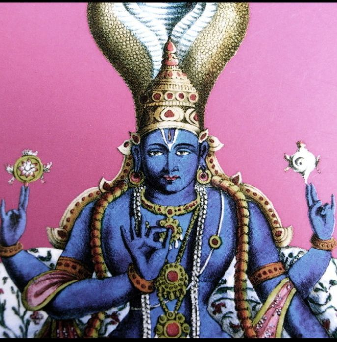
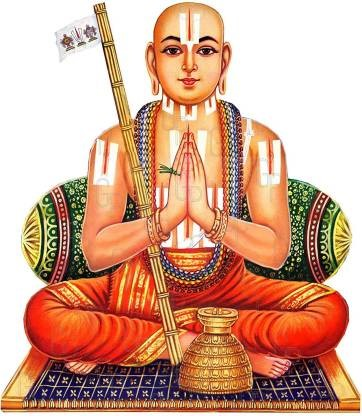
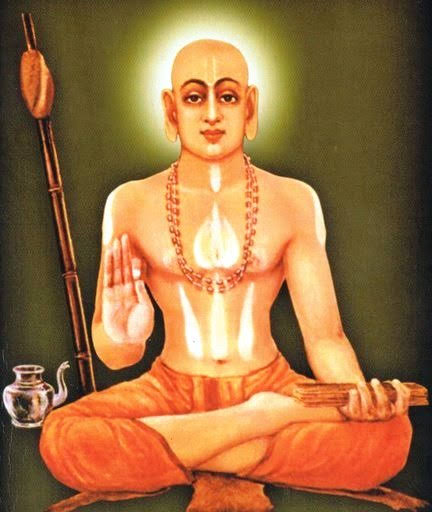

The Idols of the Party
A living lineage of Acharyas whose wisdom and courage continue to guide the party’s Dharmic vision, presented in the order of the guru lineage.

Jagadguru Narayan
The Jagadguru of the Party
In the Vedic and Vaishnava traditions, Bhagavan Narayana is revered as the Jagadguru — the original source of sacred knowledge, from whom the teaching is held to descend through Brahma and the great sages to every generation of teachers that followed.
He stands at the head of this lineage as the symbol of knowledge that is eternal, selfless and given for the welfare of all beings — the ideal that the Bhartiya Jan Seva Party places at the root of Vidya, Dharma and Seva.

Jagadguru Adi Shankaracharya
Founder of Advaita Vedanta & the Four Peethas
Born in Kaladi, Kerala, Adi Shankaracharya is revered as the fountainhead of the Aryavartha vision itself — the sage who, in his brief life, unified the diverse philosophical currents of Bharat under the banner of Advaita Vedanta. Travelling the length of the subcontinent on foot, he debated scholars of every school and revived the study of the Vedas at a time when they had grown fragmented.
To safeguard this unity for all future generations, he established the four cardinal Peethas — Sringeri in the south, Dwarka in the west, Puri in the east, and Jyotir Math in the north — each entrusted to a disciple to preserve and transmit Vedic wisdom. His life remains the original template for the party’s belief that knowledge, humility, and tireless service are the true instruments of civilizational renewal.

Jagadguru Ramanujacharya
Founder of Vishishtadvaita Vedanta & Sri Vaishnavism
Born in Sriperumbudur, in present-day Tamil Nadu, Ramanujacharya is remembered as the great teacher of Vishishtadvaita, the philosophy of qualified non-duality, which holds that the soul and the world are real and are bound to the Supreme through love and devotion. His Sri Bhashya, a commentary on the Brahma Sutras, remains a cornerstone of Vedantic scholarship.
Based at the Srirangam temple, he reorganised its worship and administration and travelled widely to spread his teaching. Tradition remembers him for opening the path of devotion and spiritual knowledge to people of every background, an example of the party’s belief that wisdom must serve everyone and that dignity belongs to all.

Jagadguru Madhvacharya
Founder of Dvaita Vedanta & the Udupi Ashta Mathas
Born near Udupi in present-day Karnataka, Madhvacharya is the great teacher of Dvaita Vedanta, the philosophy of duality, which affirms the eternal distinction between the individual soul and the Supreme and places devotion to Lord Vishnu at the heart of spiritual life. He wrote commentaries on the Brahma Sutras, the Upanishads and the Bhagavad Gita, and debated scholars of other schools with great rigour.
He established the Sri Krishna Matha at Udupi and the tradition of the eight Mathas that carry on its worship and learning to this day. His life shows the party’s conviction that clear reasoning, firm devotion and the careful preservation of institutions must go together.
Shri Mahamahim Jagadguru Vidyamaartand
Nigrahacharya
(Shree Bhagvatanand Guru)
Nigrahacharya Shri Bhagavatananda Guru is a contemporary Hindu religious teacher associated with the Nigraha Sampradaya. He is described by his followers as a religious preacher, scholar, philanthropist, and speaker with knowledge of Sanatana Vedic scriptures. The title “Nigrahacharya” is linked to the idea of restraining or correcting unrighteous conduct, and his tradition provides disciples with guidance on initiation and conduct through texts such as Shishya Patheya.